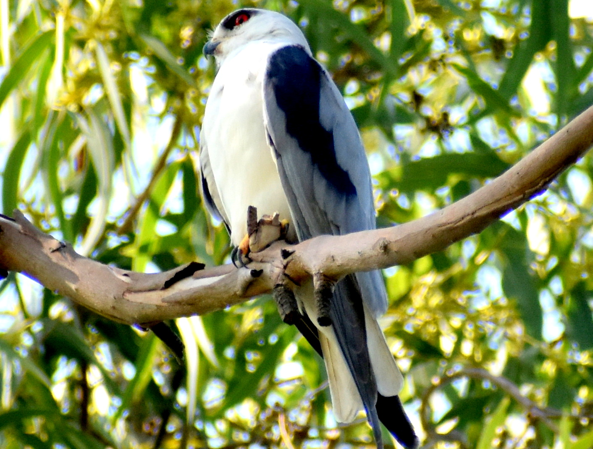
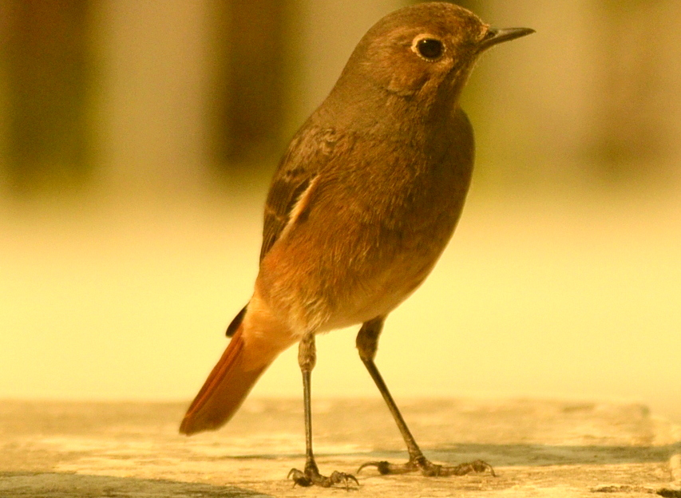
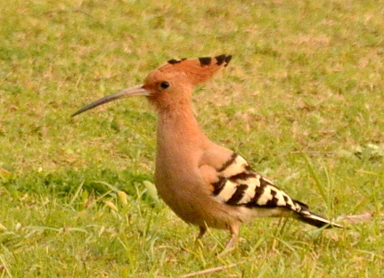

Welcome to BirdWatch, featuring my account of the Indian avifauna. Scroll below to explore their exhilarating diversity with some photographs I captured on bird trails, and my observations on their behavior, struggles and continued threats from mankind. Let's keep ourselves informed and save the remaining members of the bird community from extinction.
Browse
Water birds and waders

Waders, or shorebirds, forage along salty or freshwater banks. They are often found in groups with other waterbirds such as gulls and ducks. Low tide durations are considered best for photographing these birds.
Browse galleryRaptors
Or birds of prey, possess spectacular eyesight, talons and beaks to ease their hunting and feeding capabilities.
Browse galleryPasserines
Or perching birds, perch with three toes forward and one backward. They constitute the largest group of birds across the globe.
Browse galleryOthers
Several groups of birds that do not fall into these three categories, such as parrots, owls, etc., are listed here.
Browse gallery